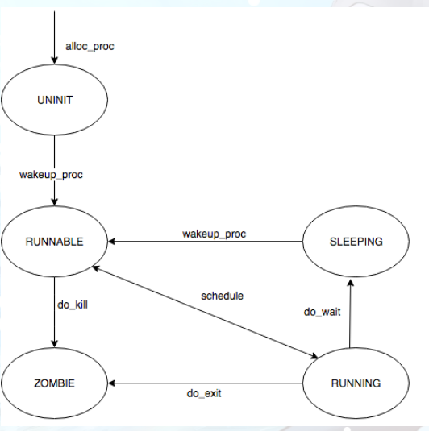
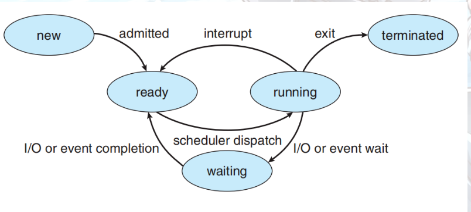

[TOC]
练习3: 阅读分析源代码，理解进程执行 fork/exec/wait/exit 的实现，以及系统调用的实现（不需要编码）
请在实验报告中简要说明你对 fork/exec/wait/exit函数的分析。并回答如下问题：
- 请分析fork/exec/wait/exit在实现中是如何影响进程的执行状态的？
- 请给出ucore中一个用户态进程的执行状态生命周期图（包执行状态，执行状态之间的变换关系，以及产生变换的事件或函数调用）。（字符方式画即可）
执行：make grade。如果所显示的应用程序检测都输出ok，则基本正确。（使用的是qemu-1.0.1）
int
do_fork(uint32_t clone_flags, uintptr_t stack, struct trapframe *tf) {
int ret = -E_NO_FREE_PROC; // init ret
struct proc_struct *proc; // new proc
if (nr_process >= MAX_PROCESS) {// if number >= MAX_PROCESS(index_max is MAX_PROCESS-1)
goto fork_out;
}
ret = -E_NO_MEM; // change ret to '-E_NO_MEM'
/*
* Some Useful MACROs, Functions and DEFINEs, you can use them in below implementation.
* MACROs or Functions:
* alloc_proc: create a proc struct and init fields (lab4:exercise1)
* setup_kstack: alloc pages with size KSTACKPAGE as process kernel stack
* copy_mm: process "proc" duplicate OR share process "current"'s mm according clone_flags
* if clone_flags & CLONE_VM, then "share" ; else "duplicate"
* copy_thread: setup the trapframe on the process's kernel stack top and
* setup the kernel entry point and stack of process
* hash_proc: add proc into proc hash_list
* get_pid: alloc a unique pid for process
* wakeup_proc: set proc->state = PROC_RUNNABLE
* VARIABLES:
* proc_list: the process set's list
* nr_process: the number of process set
*/
// 1. call alloc_proc to allocate a proc_struct
// 2. call setup_kstack to allocate a kernel stack for child process
// 3. call copy_mm to dup OR share mm according clone_flag
// 4. call copy_thread to setup tf & context in proc_struct
// 5. insert proc_struct into hash_list && proc_list
// 6. call wakeup_proc to make the new child process RUNNABLE
// 7. set ret vaule using child proc's pid
//LAB5 YOUR CODE : (update LAB4 steps)
/* Some Functions
* set_links: set the relation links of process. ALSO SEE: remove_links: lean the relation links of process
* -------------------
* update step 1: set child proc's parent to current process, make sure current process's wait_state is 0
* update step 5: insert proc_struct into hash_list && proc_list, set the relation links of process
*/
if( (proc = alloc_proc()) == NULL ) goto fork_out; // 分配proc结构并初始化,分配成功返回proc指针
proc->parent = current;
if( setup_kstack(proc) != 0 ) goto bad_fork_cleanup_proc;
//此时内核堆栈分配失败直接释放proc占用的空间
if( copy_mm(clone_flags, proc) != 0 ) goto bad_fork_cleanup_kstack;
//此时内存空间分配失败需要释放之前分配的内核堆栈,然后这个执行完会执行后面的kfree(proc)释放proc占用的空间
copy_thread(proc, stack, tf);
//设置 tf & context in proc_struct
//关中断！！并把分配pid和加入两个list和set_links(proc)都放到关中断期间执行的代码中
bool intr_flag;
local_intr_save(intr_flag);
{
proc->pid = get_pid();
hash_proc(proc);
// list_add(&proc_list, &(proc->list_link));
set_links(proc); // 设置proc的链接关系和nr_process++
// nr_process ++;
}
local_intr_restore(intr_flag); //开中断
wakeup_proc(proc); // 唤醒proc,设置proc->state为就绪态
ret = proc->pid; // 返回值是子进程的proc->pid
fork_out:
return ret;
bad_fork_cleanup_kstack:
put_kstack(proc);
bad_fork_cleanup_proc:
kfree(proc);
goto fork_out;
}
// do_execve - call exit_mmap(mm)&put_pgdir(mm) to reclaim memory space of current process
// - call load_icode to setup new memory space accroding binary prog.
int
do_execve(const char *name, size_t len, unsigned char *binary, size_t size) {
struct mm_struct *mm = current->mm; // 获取当前的thread的mm
if (!user_mem_check(mm, (uintptr_t)name, len, 0)) {
return -E_INVAL;
}
// 先判断mm：如果不为NULL代表是用户空间：先判断是否合法然后检查每个vma是否合法
// 如果为NULL代表是内核空间(因为内核线程共享内核空间),判断是否合法
// 合法 → 返回非0,否则返回0 → return -E_INVAL;
if (len > PROC_NAME_LEN) { // 如果参数name的长度大于了规定的长度就截取name的前面部分
len = PROC_NAME_LEN;
}
char local_name[PROC_NAME_LEN + 1];
memset(local_name, 0, sizeof(local_name));
memcpy(local_name, name, len); // 设置name
if (mm != NULL) { // 如果不是NULL代表是用户进程
lcr3(boot_cr3); // 切换到内核态的页表
if (mm_count_dec(mm) == 0) {
// exec会将当前进程替换为新的程序; (如果想要在新的进程运行, 需要连用 fork 和 exec)
// 因此需要对当前的mm计数减1(共享mm的进程的数目)
// 如果减1之后变0了代表可以删除了,进行一系列的删除用户进程的合法内存空间(解除pte和pde的映射,释放存在的pde),释放PDT空间,释放mm和其内容
exit_mmap(mm);
put_pgdir(mm);
mm_destroy(mm);
}
current->mm = NULL; // 然后初始化当前进程的mm,加载替换的就是当前进程！别忘了！
}
// 如果mm是NULL 那就不用初始化了
// 所以为什么内核空间的就是NULL？
int ret;
if ((ret = load_icode(binary, size)) != 0) {// 加载特定程序,加载失败之前跳过去
goto execve_exit;
}
set_proc_name(current, local_name); // 设置进程名字
return 0;
execve_exit:
do_exit(ret);
panic("already exit: %e.\n", ret);
}
// do_wait - wait one OR any children with PROC_ZOMBIE state, and free memory space of kernel stack
// - proc struct of this child.
// NOTE: only after do_wait function, all resources of the child proces are free.
int
do_wait(int pid, int *code_store) {
// pid是子进程的pid,code_store是什么？？？
struct mm_struct *mm = current->mm;
if (code_store != NULL) { // 调用do_wait的父进程的代码如果非空
if (!user_mem_check(mm, (uintptr_t)code_store, sizeof(int), 1)) { // 就判断内存空间是否合法
return -E_INVAL;
}
}
struct proc_struct *proc;
bool intr_flag, haskid;
repeat:
haskid = 0;
if (pid != 0) { // 如果pid存在
proc = find_proc(pid); // 找到他
if (proc != NULL && proc->parent == current) { // 判断此进程是否存在且父进程就是我
haskid = 1;
if (proc->state == PROC_ZOMBIE) { // 如果此进程正好是ZOMBIE态那我直接跳到found
goto found;
}
}
}
else {
proc = current->cptr;
// 如果current不是pid对应proc的父亲,那就令我的孩子为proc即查询我自己的子进程并释放ZOMBIE态的资源
for (; proc != NULL; proc = proc->optr) {
haskid = 1;
if (proc->state == PROC_ZOMBIE) {
goto found; // 如果真有ZOMBIE的子进程,那就跳到found
}
}
}
if (haskid) { // 如果存在子进程 OR 存在pid的这个process且是我的子进程
current->state = PROC_SLEEPING; // 父进程睡眠
current->wait_state = WT_CHILD; // 等待状态是等待子进程
schedule(); // 释放CPU,执行调度程序
if (current->flags & PF_EXITING) { // 如果父进程处于exiting证明进程被杀了
do_exit(-E_KILLED); // 执行do_exit并传入'-E_KILLED'
}
goto repeat; // 若未exit or return 那就repeat
}
return -E_BAD_PROC; // 否则那就代表pid的proc不是我的孩子 and 我也没有子进程 那就返回把
found:
if (proc == idleproc || proc == initproc) { // lab4中提到在lab4之后initproc就指向第一个用户态进程
panic("wait idleproc or initproc.\n"); // 所以为什么第一个用户态进程不能删除？lab6中老师说了这个是所有用户进程的祖先,通过它完成对没有父进程的孤儿子进程的回收工作
}
if (code_store != NULL) { // 如果非空就给其赋值为子进程的exit_code
*code_store = proc->exit_code;
}
local_intr_save(intr_flag); // 关中断：hast_list除去proc,解除link关系,nr_process--
{
unhash_proc(proc);
remove_links(proc);
}
local_intr_restore(intr_flag); // 开中断
put_kstack(proc); // 释放proc内核堆栈的内存空间
kfree(proc); // 释放proc
return 0; // 释放成功 返回0
}
// do_exit - called by sys_exit
// 1. call exit_mmap & put_pgdir & mm_destroy to free the almost all memory space of process
// 2. set process' state as PROC_ZOMBIE, then call wakeup_proc(parent) to ask parent reclaim itself.
// 3. call scheduler to switch to other process
int
do_exit(int error_code) {
if (current == idleproc) {
panic("idleproc exit.\n");
}
if (current == initproc) {
panic("initproc exit.\n");
}
struct mm_struct *mm = current->mm;
if (mm != NULL) {
lcr3(boot_cr3);
if (mm_count_dec(mm) == 0) {
exit_mmap(mm);
put_pgdir(mm);
mm_destroy(mm);
}
current->mm = NULL;
}
current->state = PROC_ZOMBIE;
current->exit_code = error_code;
bool intr_flag;
struct proc_struct *proc;
local_intr_save(intr_flag);
{
proc = current->parent;
if (proc->wait_state == WT_CHILD) {
wakeup_proc(proc);
}
while (current->cptr != NULL) {
proc = current->cptr;
current->cptr = proc->optr;
proc->yptr = NULL;
if ((proc->optr = initproc->cptr) != NULL) {
initproc->cptr->yptr = proc;
}
proc->parent = initproc;
initproc->cptr = proc;
if (proc->state == PROC_ZOMBIE) {
if (initproc->wait_state == WT_CHILD) {
wakeup_proc(initproc);
}
}
}
}
local_intr_restore(intr_flag);
schedule();
panic("do_exit will not return!! %d.\n", current->pid);
}
fork流程：
$alloc_proc$ $\rightarrow$ $setup_kstack(proc)$ $\rightarrow$ $copy_mm(clone_flags, proc)$
$\rightarrow$ $copy_thread(proc, stack, tf)$ $\rightarrow$ $set\ pid、list、relations(links)$ $\rightarrow$ $wakeup_proc(proc)$ $\rightarrow$ $set\ ret = proc$->$pid$
exec流程：
$user_mem_check$ $\rightarrow$ $(len > PROC_NAME_LEN)$ $\rightarrow$ $set\ local_name$ $\rightarrow$ $if\ need\ init\ mm$ $\rightarrow$ $load_icode、set_name$ $\rightarrow$ $return $
exec中的问题： 为什么内核空间的就是NULL？
待续。。。。。。。。
do_wait流程：
- 根据pid找到proc,判断是否存在and是我的子进程吗，如果是就置标志haskid为1，然后看是不是ZOMBIE态，如果是就跳到found
- 如果不是就判断是否存在子进程，如果存在就判断有无ZOMBIE态，如果有就置haskid为1然后跳到found
- 如果没有就判断标志位haskid是否为1——是否存在符合规定的进程让我等待，如果是1就循环，否则return
- 如果不是就判断是否存在子进程，如果存在就判断有无ZOMBIE态，如果有就置haskid为1然后跳到found
- found：判断是不是idleproc和第一个用户态进程initproc，这两个不能删除，如果不是就是进行资源释放、解除link操作，最后删除成功return 0
do_exit流程：
- 释放process几乎所有内存空间
- 设置state为ZOMBIE,调用wakeup_proc(parent)唤醒父进程进行后面的回收工作
- 运行调度程序
系统调用实现
idt_init：
SETGATE(idt[T_SYSCALL], 1, GD_KTEXT, __vectors[T_SYSCALL], DPL_USER);
加载idt之前设了一个中断门/中段描述符专门用于用户态DPL_USER的触发，此后一旦用户进程执行'INT T_SYSCALL'——CPU就会从用户态切换到内核态，保存相关寄存器，并跳转到__vectors[T_SYSCALL]处开始执行
lidt(&idt_pd);
根据实验指导书中然后有如下执行路径：
vector128(vectors.S)--\>
\_\_alltraps(trapentry.S)--\>trap(trap.c)--\>trap\_dispatch(trap.c)----\>syscall(syscall.c)-
vector128:
pushl $0
pushl $128
jmp __alltraps 跳转
__alltraps:用于保存用户态的用户进程执行现场的trapframe的内容，设置内核数据段，调用trap(tf) (tf是一个指向之前trapframe的指针)；
trap(trap.c):处理异常or中断执行中断服务例程_dispatch(trap.c),处理完毕返回之前的状态——通过之前存储的trapframe进行CPU state的恢复，然后通过iret指令从异常返回
trap_dispatch(struct trapframe *tf):根据tf->tf_trapno判断是'T_SYSCALL'然后调用syscall()
syscall():int num = tf->tf_regs.reg_eax; num存了系统调用号。通过syscalls[num](arg)(syscalls里面存的是函数指针)调用相关的系统调用:
static int (*syscalls[])(uint32_t arg[]) = {
[SYS_exit] sys_exit,
[SYS_fork] sys_fork,
[SYS_wait] sys_wait,
[SYS_exec] sys_exec,
[SYS_yield] sys_yield,
[SYS_kill] sys_kill,
[SYS_getpid] sys_getpid,
[SYS_putc] sys_putc,
[SYS_pgdir] sys_pgdir,
};
eg: sys_exit:
static int sys_exit(uint32_t arg[]) {
int error_code = (int)arg[0]; // 获取错误代码
return do_exit(error_code); // 调用do_exit()
}
完成do_exit()之后os按照之前的路径回到__alltraps:
# pop the pushed stack pointer
popl %esp # 跳到trapret
# return falls through to trapret...
.globl __trapret
__trapret:
# restore registers from stack
popal
# restore %ds, %es, %fs and %gs
popl %gs
popl %fs
popl %es
popl %ds
# get rid of the trap number and error code
addl $0x8, %esp
iret
“IRET”指令后，CPU根据内核栈的情况回复到用户态，并把EIP指向tf_eip的值，即“INT T_SYSCALL”后的那条指令。这样整个系统调用就执行完毕了。
执行状态生命周期图
-----------------------------
process state changing:
alloc_proc RUNNING
+ +--<----<--+
+ + proc_run +
V +-->---->--+ 这个是什么？？
PROC_UNINIT -- proc_init/wakeup_proc --> PROC_RUNNABLE -- try_free_pages/do_wait/do_sleep --> PROC_SLEEPING + + +
+ + + + + +
+ +--- do_exit --> PROC_ZOMBIE + + +
-----------------------wakeup_proc-------------------------------
下面参考：https://www.cnblogs.com/ECJTUACM-873284962/p/11282776.html
